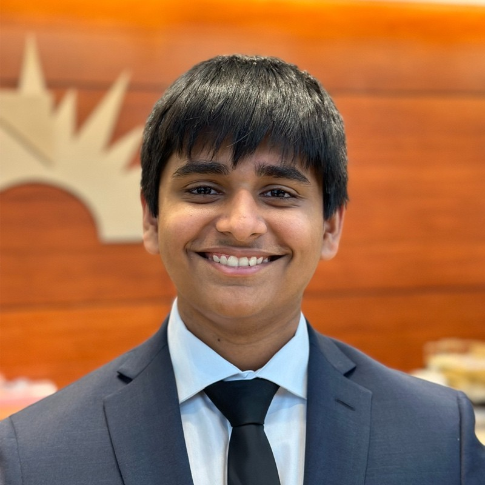

Jai Dilbaghi
Electrical and Computer Engineering at UT Austin. I design circuit boards and electrical systems in KiCad.
Looking for Summer 2027 internships.

1 Hardware projects
- Synchronous Buck Converter PCBTPS2832 gate driver, two MOSFETs, 2-layer.
- Variable-Gain Op-Amp Amplifier PCBTLV2372, BNC input, hand-assembled.
- Solar Car Electrical System, Plano Green TeamElectrical Lead; 1,150 W array and 5.2 kWh pack;
2nd in Advanced Classic 2026.
2 Also
- Machine learning research, UT Dallas (2025)
- Gym-form classifier, UT Dallas Deep-Dive AI Workshop (2024)
- Agentic Personal Operations System (Claude Code, Python)
Project information
| Project | Tools | Status |
|---|---|---|
| Buck converter | KiCad, 2-layer PCB | Ordered from JLCPCB |
| Op-amp amplifier | KiCad, SOIC-8 and through-hole | Assembled by hand |
| Solar car electrical | KiCad, 5 circuits | Raced 2024 to 2026 |